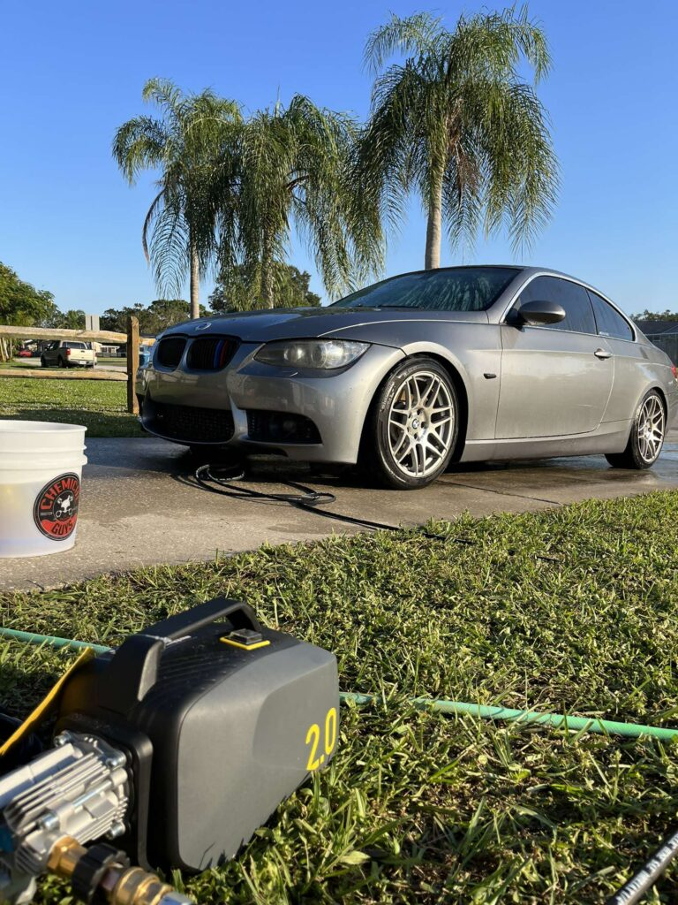

Gloss enhancement
A single polishing stage can reduce lighter swirls and haze and improve gloss. It is often the sensible choice when the paint is in fair condition and the goal is refinement rather than maximum defect removal.
Restore paint clarity, protect the finish, and maintain your vehicle with professional detailing. Request a quote for your Union Park address.
East Orlando’s Union Park community is the home base for Details by Dame. That makes address-first scheduling especially practical for nearby homes and workplaces.
For homes near Blanchard Park and the Little Econ Greenway, tell us whether the vehicle will be in a driveway, garage, or shared parking area. University Boulevard and nearby commuter routes make weekday workplace appointments worth asking about, subject to access and schedule.
Details by Dame is based in Union Park, East Orlando. We do not imply a walk-in shop in Union Park; mobile appointments are confirmed individually. Send the address, vehicle year/make/model, requested work, and parking details before planning a visit.
Our location page references Blanchard Park, the Little Econ Greenway, University Boulevard, and the surrounding Union Park residential neighborhoods. These landmarks help identify the community and orient local service requests; they are not a claim that every nearby public or commercial parking area permits detailing. A private driveway or approved work area is preferred.
For drivers searching for paint correction near Union Park, swirl removal, scratch reduction, water-spot improvement, and a clearer gloss.
Before polishing, we inspect the paint under suitable lighting, identify visible defects, look for signs of previous repair where possible, and discuss your desired finish. A pre-paint-correction inspection helps separate defects that can be improved from damage that should not be chased.
Where the panel and substrate allow, paint-gauge readings help identify thickness variations and potential risk areas. Many gauges measure total coating thickness, not clear coat alone, and readings are not available or directly comparable on every material. We use them as one part of the assessment.
A test spot is then performed on a representative area. We select a pad and compound or polish, work a small section, and inspect the result. This helps choose the least aggressive combination that can reasonably achieve the agreed improvement.

A single polishing stage can reduce lighter swirls and haze and improve gloss. It is often the sensible choice when the paint is in fair condition and the goal is refinement rather than maximum defect removal.
A dedicated cutting pass addresses more pronounced defects, followed by a finer polish to refine the finish and improve clarity. It takes more time and removes more material than a light one-step approach.
Multiple polishing stages or localized wet sanding may be considered for suitable paint and defects only. Wet sanding is higher risk and removes material; it is not appropriate for every panel, scratch, or vehicle. Deep defects may need to remain rather than compromise the clear coat.
Before correction or coating, the paint needs more than a quick rinse. An iron remover chemically targets embedded ferrous fallout. A clay bar can remove remaining bonded contamination that washing and chemical treatment leave behind. Clay must be used with lubrication and care because it can create light marring; the surface is inspected and polished as appropriate afterward.
After polishing, an IPA-based panel wipedown or suitable coating-prep product removes polishing oils and residue. This final wipedown helps reveal the actual finish and prepares the surface for ceramic coating. It is not a substitute for washing or decontamination.
Learn more about our Orlando paint correction process or view the Porsche correction project.
Protect a clean, properly prepared finish with hydrophobic paint protection and a maintenance plan suited to Central Florida driving. If you are comparing auto ceramic coating Union Park options, we can assess the paint and explain the preparation needed before application.
Before coating, the surface is washed, chemically and mechanically decontaminated as needed, inspected, corrected if requested, and panel-wiped. The coating is then applied to a clean, prepared surface and allowed to cure according to product instructions. After coating, water typically beads or sheets more readily and routine washing can become easier—but the vehicle still needs careful maintenance.
Ceramic coating does not hide swirls, repair scratches, prevent rock chips, or make paint scratch-proof. That is why correction belongs before protection when the finish needs improvement.
Explore ceramic coating ↗
Water can bead and release more readily, helping routine washing and drying when the coating is maintained correctly.
A coating can enhance the look of a refined finish and make some contaminants easier to remove during safe washing.
Coating costs more than wax, requires careful preparation and application, and does not remove the need for washing. Water spots, scratches, and chips can still occur.
Traditional wax is usually less expensive and simpler to apply, but it generally offers shorter-lived protection. Ceramic coating is a longer-term surface treatment with stronger hydrophobic behavior, but the initial preparation and installation are more involved. Neither option makes a vehicle maintenance-free. The right choice depends on your budget, expectations, and willingness to follow proper wash care.
Explore ceramic coating in Orlando and the Corvette coating project.
Routine interior and exterior care for vehicles that need a reset or ongoing maintenance—not paint correction disguised as a wash.

Mobile detailing brings scheduled vehicle care to a suitable home or workplace location, so you can maintain your vehicle without arranging a trip to a detailing shop. It is designed for upkeep and a thorough reset—not a substitute for machine paint correction or a dedicated ceramic coating installation.
Interior detailing: We focus on the cabin, including vacuuming carpets and upholstery, removing loose debris, cleaning interior surfaces and touchpoints, and addressing appropriate interior materials with suitable products. The goal is a cleaner, more comfortable cabin. See our interior car detailing service.
Exterior detailing: We safely wash the vehicle’s exterior to remove everyday road film and surface contamination, clean wheels and tires, and finish exterior surfaces for a refreshed appearance. For paint defects such as swirls and scratches, see our separate paint correction service; for exterior wash and care options, explore our exterior car detailing service; for longer-term hydrophobic paint protection after proper preparation, explore ceramic coating.
Our mobile detailing service combines interior and exterior maintenance options. Tell us which areas need attention and about the parking setup so we can confirm the right scope and whether on-site service is practical at your address.
Pros: convenience, less disruption to your day, service at an approved location, and the ability to maintain a corrected or coated finish between major services.
Cons: weather and shade affect scheduling; apartment, HOA, office, and retail properties may restrict vendors; some locations lack suitable water, power, drainage, or safe working space; and mobile maintenance detailing is not a substitute for machine paint correction or a controlled coating installation environment.
Tell us about the parking setup and requested service so we can confirm whether mobile detailing is practical at your address.
Mobile service requirements: For on-site detailing, we need access to a suitable water source and electrical power, along with a safe, permitted work area. If your property cannot provide both, ask about arranging a vehicle drop-off instead.
Answers about paint correction, ceramic coating preparation, mobile appointment logistics, and getting a quote.
Details by Dame is based in the Union Park area of East Orlando. Share your exact address, vehicle, and requested service so we can confirm appointment availability and access.
Yes, you can request an assessment for paint correction in Union Park. We inspect the finish, discuss realistic improvement, and quote the work based on vehicle condition and the correction level needed.
Not every vehicle needs a multi-stage correction, but the paint should be clean and properly prepared. If swirls, haze, or scratches bother you, correction before coating is the opportunity to improve them.
Pricing depends on vehicle size, paint condition, defect severity, and the hours required. Photos help with an initial conversation, but an in-person paint inspection is needed for a responsible quote.
A one-step uses a combined polishing approach for moderate improvement. A two-step typically uses a cutting stage followed by a refining polish for more substantial defect reduction and clarity.
Ceramic coating improves water behavior and helps routine cleaning, but it does not make paint scratch-proof or stop rock chips. Physical impact protection requires a different product such as paint protection film.
Ceramic coatings generally last longer and offer stronger chemical and hydrophobic resistance than traditional wax, but they cost more and require careful preparation and maintenance.
Sometimes. We need to confirm permission, safe working space, water and power arrangements where required, and whether the parking area permits detailing. Send the address and parking details first.
Time depends on vehicle size, interior condition, and the selected service. A maintenance wash is different from a deep interior detail or paint correction, so we confirm an estimated time with the quote.
Send your Union Park address or nearest cross streets, vehicle year/make/model, the service you want, and a few clear photos of the paint or interior. We will confirm whether the location is serviceable.
Send your address, vehicle, photos, and desired result. We’ll confirm service availability before scheduling.